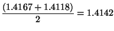

| Guess | Quotient | Average |
| 1 |
|
|
| 1.5 | |
 |
| 1.4167 | |
 |
| 1.4142 | ... | ... |
Continuing this process, we obtain better and better
approximations to
the square root. "
(From Structure
and
Interpretation of Computer Programs by Abelson and
Sussman).
Using a spreadsheet or calculator apply Newton's method to
find
the square root of 144 using an initial guess of
1. How do
you know when to stop? How many steps did it take you? (Using
OpenOffice spreadsheet it took me 7 steps).
Apply Newton's method to find the square root of 5 using an
initial guess of 100. My implementation of Newton's
method,
calculated the square root of 5 to be 2.23606797749979 in step 10.
Do you think that 2.23606797749979 is the exact square root?
Explain. How many steps does it take to generate the square
root
of 5e+30 with an initial guess of 100? Why is it
better to
stop the process when the next guess
(generated by the average) is very near "old" guess (i.e. "old guess" -
"new guess" < "near") where "near" is determined by the user,
instead stopping the process when "old guess" equals the "new
guess"?